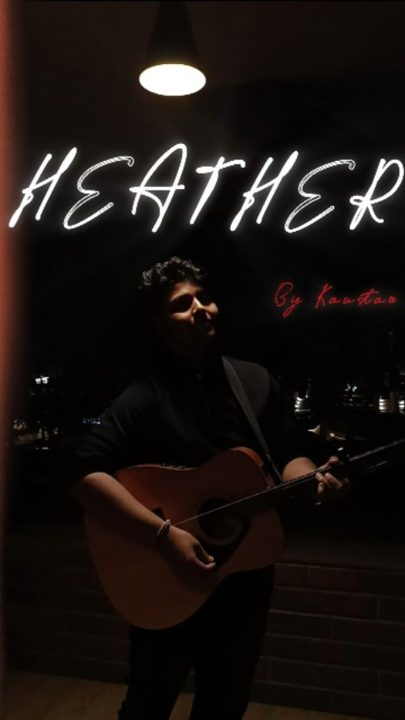
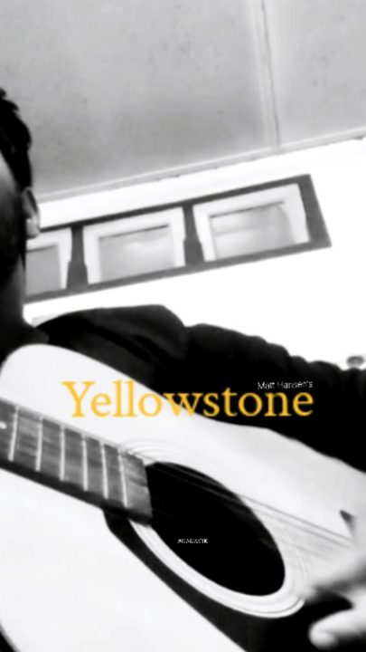
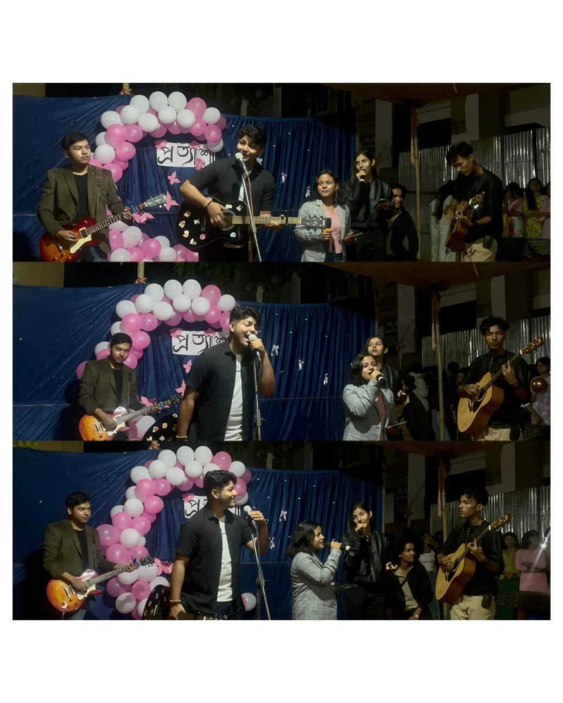
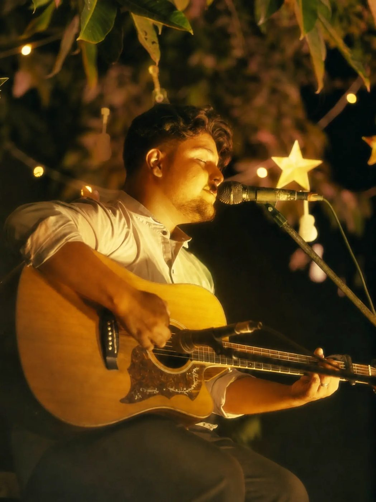
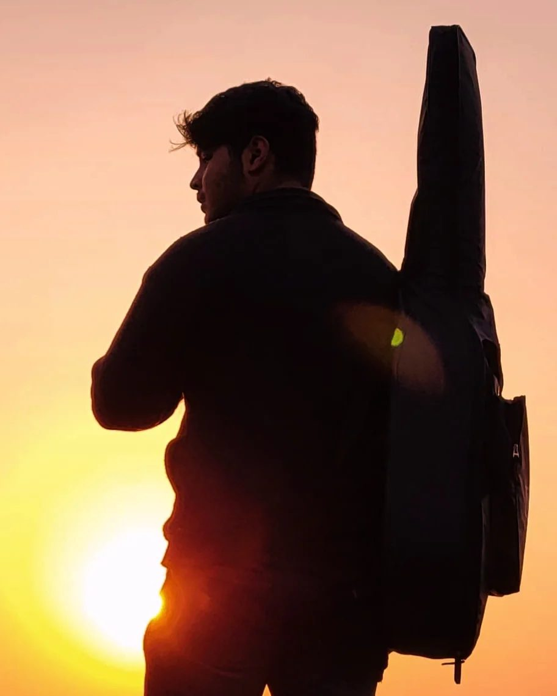
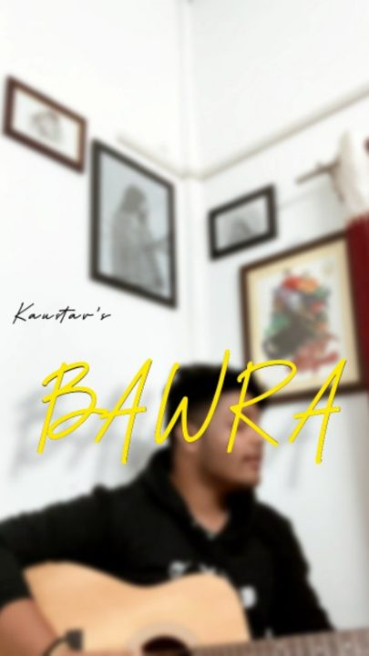
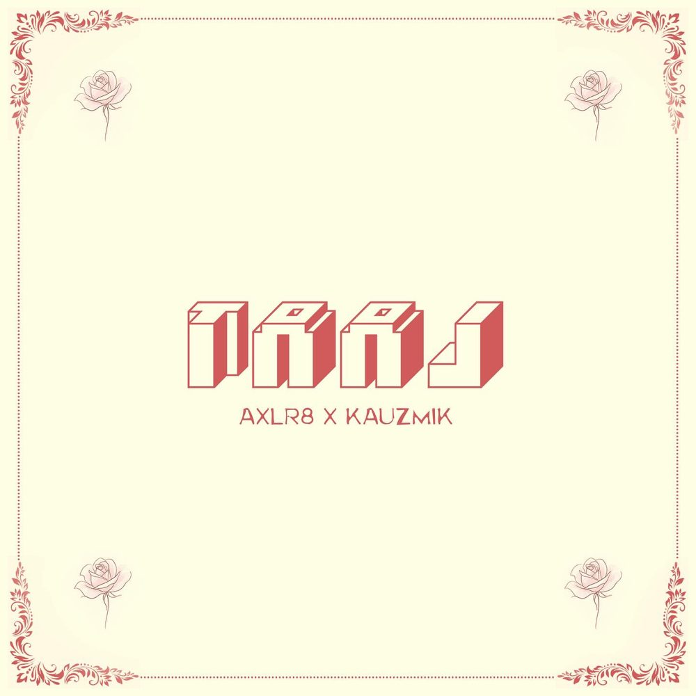

Vocalist
Experience in vocal performance, exploring different vocal expressions and bringing emotion to musical projects.
Independent music artist
Who is KAUZMIK?
Vocalist. Lyricist. Composer. Percussionist. Guitarist.





I'm KAUZMIK, an independent music artist passionate about creating unique sounds and expressing my creativity through music. I enjoy exploring different musical styles and building a sound that reflects my identity and vision.

Through my music, releases and collaborations, I aim to connect with listeners and bring fresh ideas to every project. I believe in originality, creativity and delivering quality work that stands out.
For me, music is more than just sound. It's a way to express myself, connect with people and create something meaningful. My goal is to keep growing as an artist and make music that leaves a lasting impression.
Experience in vocal performance, exploring different vocal expressions and bringing emotion to musical projects.
Experience in writing original lyrics, translating creative ideas, emotions and stories into words.
Experience in developing original musical compositions and experimenting with different styles, melodies and sounds.
Ongoing exploration of new musical directions, building on previous works and evolving as an independent artist.
On stage, with the strings.

New release
AXLR8 × KAUZMIK
Out now on all major streaming platforms, released through XTILE Studio Records Co.
Listen nowI'm KAUZMIK, an independent artist evolving with every song, stage, and experience. As a vocalist, lyricist, composer, percussionist, and guitarist, I strive to create music that reflects my journey and connects with people.
Every milestone shapes my sound. Every experience fuels my growth. And I'm only getting started.
KAUZMIK